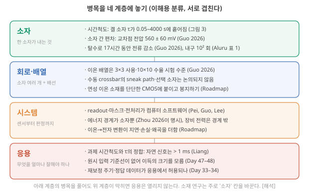
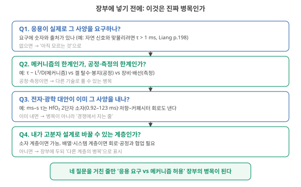
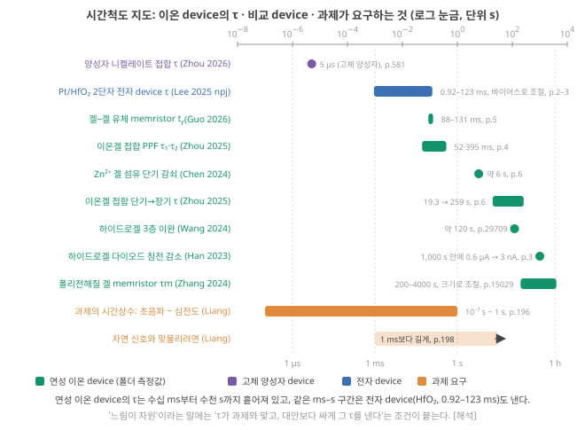
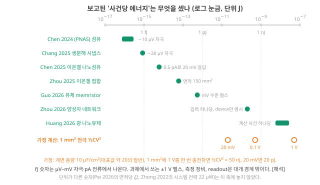
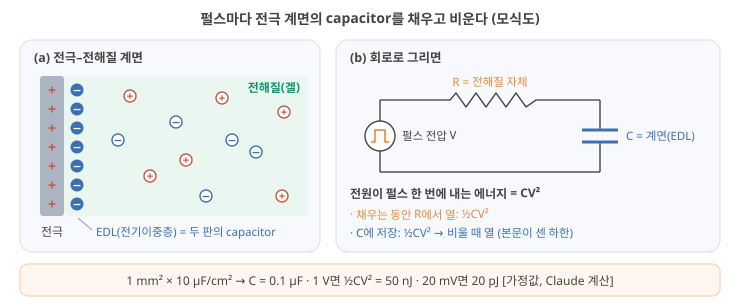
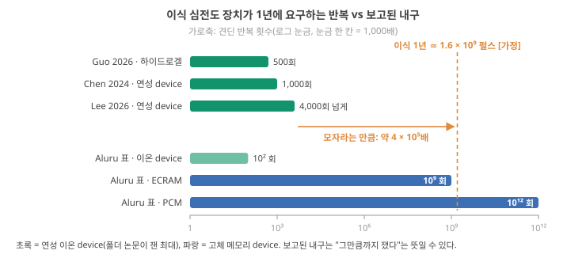
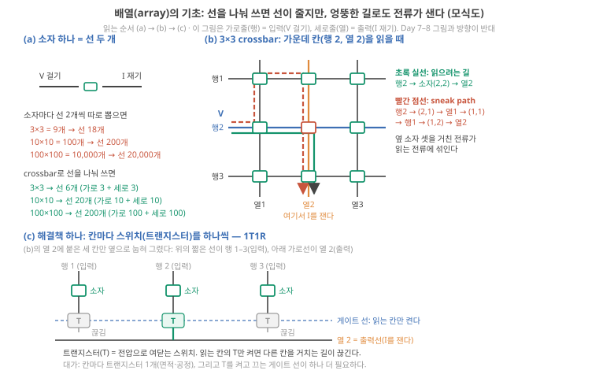
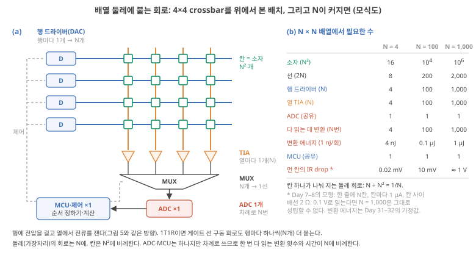
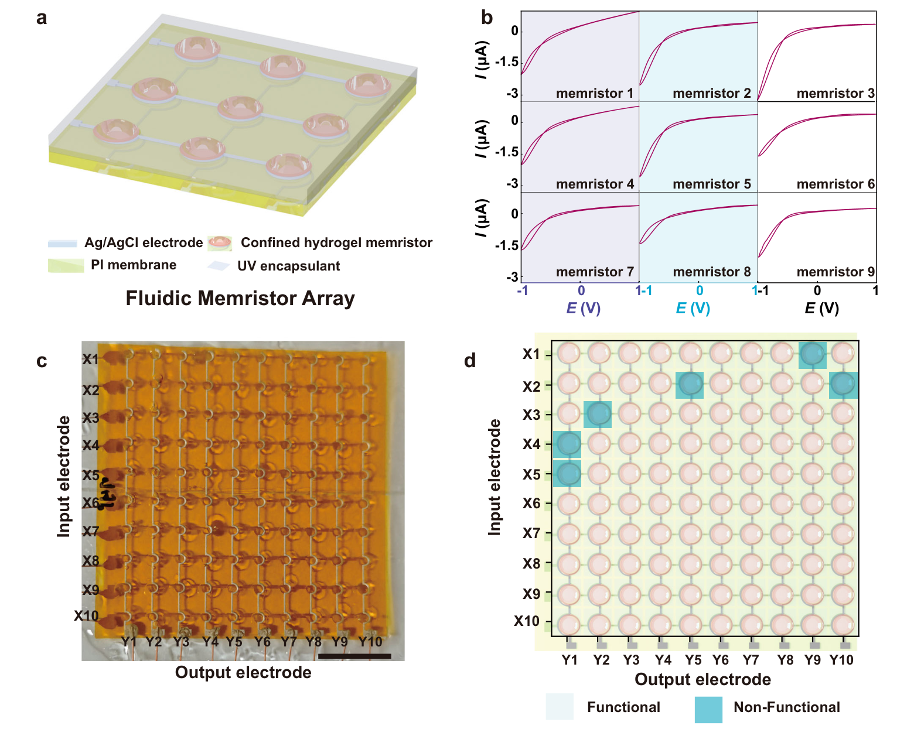

Day 49. 병목의 계층: 속도·전력·안정성·집적
Phase 5 · 나는 무엇을 연구해야 하는가
이번 질문 ionic reservoir computing의 병목을 계층으로 나누면 속도·전력·안정성·집적에서 각각 무엇이 문제인가?
왜 배우나 어느 계층의 어느 숫자가 전체를 막는지 알아야 다음 실험을 고른다.
오늘의 장면 L·면적·전압·박동 수 가정 → τ~L²/D·½CV²·연 펄스 → 같은 단위로 비교 → 병목 항목
오늘 반드시 병목이 아닌 곳을 고쳐도 전체는 그대로다. fJ 숫자는 µV 자극의 device 에너지일 뿐이며 1 mm² 전극을 1 V로 충전하면 50 nJ이다.
나중에 봐도 됨 배열 회로 부품 수 · IR drop 수치 · 패터닝 세 가지 · 집적 밀도
넘어가는 기준 '오늘 반드시'를 내 말로 말할 수 있으면 충분합니다.
이후 쓰이는 곳 Day 51–52 교차표 시간·에너지·수명 칸 · Day 53–56 내구·drift 실험 · Day 57–58 crossbar 쓰기 비용
지난 학습 복습
지난 학습 단위(Day 48 · 시냅스 모사·ionic reservoir computing 논문 읽기와 패턴)의 핵심을 다른 예로 확인합니다. 고르는 즉시 맞았는지와 이유가 보입니다. 틀려도 아래 학습자료는 그대로 열려 있고, 틀린 문제에는 다시 볼 곳이 붙습니다.
사전 테스트 (선택)
사전 테스트 펼치기 · 배우기 전에 짐작해 보는 문제 (선택)
학습자료
Day 47–48에서 폴더의 대표 논문 13편을 표에 놓아 보니 빈칸이 많았습니다. 원시 입력 기준선(device를 빼고 입력을 그대로 같은 readout에 넣은 비교), device 간 편차, drift(시간이 지나며 응답이 서서히 흐르는 것), 시스템 에너지, 배열. 여기서 reservoir는 입력열을 내부 상태로 바꾸는 물리계(이번에는 이온 device), readout은 그 상태들에 weight를 곱해 더해 답을 내는 마지막 층입니다(내부 상태). 이번 질문은 그다음입니다. ★ 그 빈칸들 중 무엇이 이온성 RC를 실제로 쓰지 못하게 막는 "진짜 병목"인가? 빈칸이 모두 같은 무게는 아닙니다. 어떤 것은 다음 논문 한 편이 채울 수 있고, 어떤 것은 이온이라는 물리 자체에서 옵니다. 그것을 가르는 것이 이번 일입니다.
이 주제의 질문 순서 — 이번 Day 49에서는 구간 1–4만 읽습니다. 나머지는 Day 50에서 이어집니다(구간 번호는 원래 한 묶음이던 순서 그대로입니다).
- "병목"이란 정확히 무엇이고, 왜 device·회로·시스템·응용의 계층으로 나눠 보나? → 구간 1
- 속도: 이온 device는 왜 느리고, 그 느림은 재료의 성질인가 크기의 문제인가? 느림은 병목인가 자원인가? → 구간 2
- 전력과 안정성: fJ는 왜 시스템 이득이 아니고, 이온 소재에만 있는 안정성 문제는 무엇인가? → 구간 3
- 배열과 집적: 배열이란 무엇이고 왜 만드나? 젤·연성 이온 device도 집적되나? → 구간 4
- 전자회로와의 접속: reservoir만 device로 할 때와 readout까지 device로 할 때는 무엇이 다른가? 학습은 어디서 하나? (Day 50에서)
- 그래서 진짜 병목은 무엇인가? (Day 50에서)
가정값 한눈에. 이 Day의 계산은 아래 몇 개의 가정값을 되풀이해 씁니다. 지금 다 읽을 필요는 없고, 계산이 나올 때마다 이 표로 돌아와 "어느 값을 바꿨나"만 확인하면 됩니다. 모두 자릿수를 보려고 고른 값이며 측정값이 아닙니다.
| 양 | 가정값 | 어디서 쓰나 |
|---|---|---|
| 확산계수(diffusion coefficient) \(D\) | 10⁻⁹ m²/s (물 속 작은 이온의 자릿수) | 속도(τ ~ L²/D), 집적 밀도(크기–τ) |
| Device 크기 \(L\) | 1 mm(손으로 만든 겔) ~ 100 nm | 속도 |
| 계면 용량 | 10 µF/cm² (매끈한 금속 전극 대표값 약 20 µF/cm²의 절반) | 계면 충전, 박동 장부 |
| 전극 면적 | 1 mm² = 0.01 cm² → C = 0.1 µF / 100 µm × 100 µm = 10⁻⁴ cm² → C = 1 nF | 계면 충전, 박동 장부 |
| 펄스 전압 | 1 V, 0.5 V, 20 mV | 계면 충전, 박동 장부 |
| 박동 | 1초에 1번, 박동 하나 = 신호 1 s = inference 한 번 | 박동 장부, 안정성(1년 박동 수), 보드 위 부품 |
| 펄스 수 | 박동당 50단계(device 하나) × device 10개 = 장부의 펄스 500개 | 박동 장부(500), 안정성(device 하나 50) |
| 회로 에너지(Day 31–32의 박동 장부 표) | TIA 1 µW/채널, ADC 1 nJ/변환, MAC 3 nJ, MCU 대기 2 µW, AFE 10 µW, 무선 50 nJ/bit × 16 bit | 박동 장부, 배열 둘레, 보드 위 부품 |
| 배선 모형(Day 7–8의 crossbar 모형) | 칸마다 1 µA, 칸 사이 배선 2 Ω | 배열 둘레(IR drop) |
| 칸 간격 | Device 크기의 두 배 | 집적 밀도 |
| 쓰기 오차 | Weight마다 ±0.04 (Zhong 2022의 허용 오차를 빌림) | 쓰기 오차 |
1. 병목이란 무엇이고, 왜 계층으로 나누나
상황. 내 겔 device는 τ가 수백 s이고, 심전도(박동 약 1 s)를 몸 안에서 1년 읽는 장치에 쓰고 싶습니다. 다음 실험을 τ를 줄이는 쪽에 쓸지, 오래 버티는지 재는 쪽에 쓸지 정하려면 "무엇이 전체를 막는가"를 먼저 가려야 합니다. 그 일을 하는 말이 병목(bottleneck)입니다.
끝나면 할 수 있는 것. '병목'을 처리량과 비용의 숫자로 정의하고, 이온성 RC의 문제를 device·회로·시스템·응용의 네 계층에 놓은 뒤, 네 질문으로 '진짜 병목'과 '고칠 수 있는 빈칸'을 가를 수 있다.
병목의 계층: device·회로·시스템·응용
병의 목. 물이 가득 든 병을 뒤집으면, 병이 아무리 커도 물이 나오는 빠르기는 가장 좁은 목이 정합니다. 여러 단계를 차례로 거치는 일에서 전체의 빠르기(또는 비용)를 정하는 가장 좁은 단계를 병목(bottleneck)이라고 부릅니다.
세 단계로 세어 보기. 신호가 세 단계를 거친다고 합시다. 1단계는 1초에 1,000개, 2단계는 1초에 10개, 3단계는 1초에 500개를 처리합니다. 전체는 1초에 몇 개를 처리할까요? 2단계가 10개만 넘겨주므로 10개입니다. 이제 1단계를 열 배 빠르게(10,000개/s) 해도 전체는 여전히 10개입니다. 2단계를 20개/s로 두 배 빠르게 하면 전체도 20개/s가 됩니다. 병목이 아닌 곳을 아무리 고쳐도 전체는 변하지 않고, 병목을 고치면 전체가 바로 움직입니다. 에너지도 같은 구조입니다. Inference 한 번(새 입력 하나에 답 하나를 내는 일)에 device가 6 fJ, ADC(아날로그 값을 숫자로 바꾸는 변환기) 변환이 1 nJ(Day 31–32의 가정값)를 쓴다면, device를 1 fJ로 줄여도 전체는 거의 그대로입니다(시스템 비용).
왜 계층으로 나누나. 이온성 RC가 실제로 쓰이려면 여러 층이 함께 작동해야 합니다. 이 교재는 넷으로 나눕니다(이해를 위한 분류이며 겹칩니다).
- Device: device 하나가 내는 것. 시간상수 τ(응답이 줄어드는 빠르기를 나타내는 시간), 반복·device 간 편차, 몇 번이나 버티나(내구), 시간에 따른 변화(drift).
- 회로·배열: device 여러 개를 배선으로 엮고, 입력을 넣고 상태를 읽는 회로. 배열의 크기, 엉뚱한 길로 새는 전류, 읽기 회로의 수.
- 시스템: 센서부터 판정까지 전체. Inference 한 번의 에너지, 지연시간(latency, 답이 나오기까지 걸리는 시간), 이온 신호와 전자 회로 사이의 변환, 봉지(device를 물·공기·체액으로부터 막는 포장, encapsulation).
- 응용(application): 이 장치가 쓰일 자리가 요구하는 것. 정확도, 시간 창, 수명, 크기, 몸 안 조건.
계층을 나누는 이유는 둘입니다. 첫째, 어느 계층의 병목인지에 따라 누가 풀 수 있는지가 다릅니다. 소재 연구자가 고분자 설계로 바꿀 수 있는 것은 주로 device 계층이고, 배열·시스템 계층은 회로·공정과 함께 풀어야 합니다. 둘째, 아래 계층을 풀어도 위 계층이 막히면 응용은 열리지 않습니다. τ를 과제(task)의 시간척도에 꼭 맞춰도, device를 배열로 엮을 수 없거나 몸 안에서 일주일을 버티지 못하면 이식형 장치는 만들 수 없습니다.
그림 1은 이번 Day에서 다룰 병목 후보를 이 네 계층에 미리 놓아 본 지도입니다. 지금은 칸(계층)의 이름과, 칸마다 어떤 종류의 문제가 들어가는지만 보세요. 줄마다 나오는 숫자(τ의 범위, 560 ± 60 mV, 10² 회)는 뒤의 속도·전력·안정성·배열 절에서 하나씩 설명합니다.

진짜 병목을 가르는 네 질문. 빈칸 하나를 병목 장부(응용이 요구하는 spec과 메커니즘이 허용하는 spec을 나란히 적는 표)에 올리기 전에, 그림 2의 네 질문을 위에서 아래로 차례로 묻습니다.

Q1 응용이 정말 그 spec을 요구하나(숫자와 출처)? Q2 메커니즘의 한계인가, 공정·측정의 한계인가? Q3 전자·광학 대안이 이미 그 spec을 내나? Q4 내가 고분자 설계로 바꿀 수 있는 계층인가? 네 질문을 통과한 줄이 Day 51–52의 "응용 요구 vs 메커니즘 허용" 교차표에 들어갑니다. 이 질문들을 속도·전력·안정성·배열·접속의 결과에 실제로 적용하는 것은 마지막 절입니다.
세 단계가 1초에 각각 200개, 50개, 5,000개를 처리합니다. 전체는 1초에 몇 개를 처리하고, 셋째 단계를 두 배로 빠르게 하면 전체는 어떻게 될까요? 아래 점검으로 확인하세요.
- 병목 = 전체의 빠르기·비용을 정하는 가장 좁은 단계. 병목이 아닌 곳을 고쳐도 전체는 그대로다(1,000·10·500개/s → 10개/s).
- 네 계층: device · 회로·배열 · 시스템 · 응용. 계층에 따라 누가 풀 수 있는지가 다르고, 아래를 풀어도 위가 막히면 응용은 열리지 않는다.
- 네 질문(요구가 실재하나 / 메커니즘인가 공정인가 / 대안이 이미 내나 / 내가 바꿀 수 있나)을 통과한 줄만 병목 장부에 올린다.
2. 속도: 느림은 재료의 성질인가, 크기의 문제인가
이 구간을 읽고 나면 확산 시간 τ ~ L²/D로 device 크기와 τ의 관계를 직접 계산하고, 폴더 device들의 τ를 과제의 시간척도와 같은 축에 놓아 "느림"이 어떤 응용에서 병목이고 어떤 응용에서 자원인지 말할 수 있다.
먼저 복습. 이온이 거리 \(L\)을 확산으로 건너는 데 걸리는 시간은 대략 \(\tau \sim L^2/D\)입니다. \(D\)는 확산계수(이온이 얼마나 빨리 퍼지나, 단위 m²/s)입니다(확산 시간). 물 속의 작은 이온은 \(D\)가 대략 10⁻⁹ m²/s 자릿수이고, 겔·고분자 속에서는 더 작아집니다(이동도와 확산계수). 핵심은 거리의 제곱입니다. 거리를 10배 줄이면 시간은 100배 줄어듭니다. (기호 주의: 여기의 대문자 \(D\)는 확산계수입니다. Day 15–16·Day 23–48에서 state update \(x \leftarrow d\,x + (1-d)\,u\)에 쓴 소문자 \(d\)(한 단계에 남는 비율)와는 다른 양입니다.)
L = 1 mm. \(L^2 = (10^{-3}\,\text{m})^2 = 10^{-6}\) m². \(D = 10^{-9}\) m²/s로 나누면 \(10^{-6}/10^{-9} = 10^{3}\) s, 즉 약 17분. 손으로 만든 mm 크기 하이드로겔 device의 이완이 수백–수천 초인 것은 이 자릿수입니다.
L = 100 µm. \(L^2 = 10^{-8}\) m² → \(10^{-8}/10^{-9} = 10\) s.
L = 10 µm. \(L^2 = 10^{-10}\) m² → \(0.1\) s = 100 ms. 심전도 박동 하나(약 0.6–1 s)보다 짧아집니다.
L = 1 µm. \(L^2 = 10^{-12}\) m² → \(10^{-3}\) s = 1 ms.
L = 100 nm. \(L^2 = 10^{-14}\) m² → \(10^{-5}\) s = 10 µs. 같은 이온, 같은 \(D\)인데 크기만 줄여 10⁸배 빨라졌습니다. 가정
폴더 논문의 예: 크기를 바꾼 같은 겔. Zhang 2024 (ACS Nano)는 같은 폴리전해질 겔 device의 크기를 바꿔 기억 시간을 4,000 s(큰 device)에서 200 s(작은 device)로 바꿨고, 겔 영역 전체 길이 \(L\)(4.3 mm와 1.5 mm)로 \(\tau = L^2/4D\)를 어림하면 2,311 s와 281 s라고 적습니다(분모의 4는 퍼지는 모양에 따라 붙는 숫자 인자로, 자릿수 어림에서는 생략합니다. 확산 시간) Zhang 2024 (ACS Nano), p.15029. 다만 시뮬레이션에서는 τ의 변화가 균일 물질의 \(L^2/D\) 예측보다 덜 가팔랐습니다 Zhang 2024 (ACS Nano), p.15030. ★ 크기가 τ를 정하는 큰 손잡이인 것은 맞지만, 겔과 계면이 섞인 실제 구조는 단순한 식과 조금 다르게 움직인다는 뜻입니다.
이제 폴더 device들의 τ를 한 축에 놓습니다. 그림 3의 가로축은 로그 눈금입니다. 위 눈금 한 칸(10⁻⁸ → 10⁻⁶)이 100배이고, 아래의 1 µs·1 ms·1 s·1 h 점선이 기준입니다. 막대는 범위, 점은 값 하나입니다. 이름에 나오는 memristor는 지나간 전압·전류에 따라 저항이 바뀌고 그 값을 한동안 기억하는 두 단자 device입니다(conductance와 memristor). 읽을 때는 초록(연성 이온 device)이 어디에 몰려 있는지, 그리고 주황(과제가 요구하는 시간)과 얼마나 겹치는지를 보세요.

지도가 말하는 것. 세 가지입니다.
- 연성 이온 device의 τ는 수십 ms부터 수천 s까지 흩어져 있다. 같은 "하이드로겔 시냅스"라도 메커니즘(이중층 충전, 계면 이온 고갈, 침전)과 크기에 따라 자릿수가 다섯 개나 다릅니다. 그러니 "이온은 느리다"는 한 문장은 틀리지는 않지만 쓸모가 적습니다. 얼마나 느린지는 대부분 크기와 메커니즘이 정합니다. 해석
- 이온이라서 반드시 느린 것은 아니다. 고체 산화물 속 양성자(H⁺)가 nm–µm 거리를 움직이는 device는 τ가 5 µs였습니다 Zhou 2026 (Nat. Nanotech.), p.581. 반대로 전자 device도 ms–s를 낼 수 있습니다. Pt/HfO₂ 2단자 device는 바이어스 전압으로 τ를 0.92 ms에서 123 ms까지 바꿨습니다 Lee 2025 (npj), p.2–3. ★ 즉 "ms–s의 τ"는 이온 device만의 자산이 아닙니다. '전자·광학 대안이 이미 그 spec을 내나'라는 질문에 "그렇다"가 나오는 자리입니다.
- 과제와의 정합. Liang 리뷰는 센서 가까이에서 자연 신호와 맞물리려면 물리 노드가 1 ms보다 긴, 생물학적으로 현실적인 시간척도를 가질 수 있다고 쓰고, τ가 너무 짧으면 실시간 신호와 결합하지 못한다고 씁니다 Liang 2024, p.198. 같은 리뷰는 과제의 시간상수가 초음파(10⁻⁷ s)부터 심전도(1 s)까지 퍼져 있다고 적습니다 Liang 2024, p.196. ★ 심전도·호흡·걸음 같은 신호에는 연성 이온 device의 ms–s τ가 맞고, 초음파나 디지털 칩의 박자(ns)에는 맞지 않습니다(시간척도 정합).
그런데 느림에는 두 번째 비용이 있습니다: 처리율(throughput). τ가 과제와 맞아도, device 하나가 1초에 처리할 수 있는 입력의 수는 τ에 묶입니다. 실시간 신호 하나를 그 신호의 빠르기로 처리하는 일(심전도 한 사람)에는 문제가 없습니다. 그러나 같은 device를 시간으로 쪼개 여러 노드처럼 쓰는 time multiplexing(time multiplexing과 virtual node)나, 큰 데이터셋을 device로 통과시키는 일에는 치명적입니다. Day 47–48에서 계산한 대로, 펄스 하나에 1 s가 드는 device로 MNIST(손글씨 숫자 그림 데이터셋) 7만 장을 모두 처리하면 약 356일입니다. 그래서 논문들이 lookup 방식을 씁니다. 4개짜리 0·1 조합 16가지에 대한 device의 응답만 한 번씩 재 두고, 큰 데이터셋은 컴퓨터가 그 16칸짜리 표를 찾아 계산하는 방식입니다(lookup 방식). Roadmap도 이온 수송에 기반한 감지 device는 재료 고유의 동역학 때문에 더 느리게 반응하는 경향이 있다고 적습니다 Roadmap 2026, p.8120.
"이온 device는 느려서 쓸모가 없다" / "이온 device는 느려서 생체 신호에 딱 맞다" — 둘 다 조건이 빠졌습니다. τ는 대부분 크기와 메커니즘이 정하고(µs–ks), 과제와 맞는지는 과제마다 다릅니다. 그리고 맞더라도 device 하나의 처리율은 τ에 묶이므로, time multiplexing이나 대량 처리에는 별도의 비용이 됩니다.
- τ ~ L²/D: D = 10⁻⁹ m²/s일 때 1 mm → 1,000 s, 10 µm → 0.1 s, 100 nm → 10 µs 가정. 크기를 10배 줄이면 100배 빨라진다.
- 연성 이온 device의 τ는 52 ms–4,000 s에 흩어져 있다. 고체 양성자 device는 5 µs Zhou 2026 (Nat. Nanotech.), p.581, 전자 device도 0.92–123 ms Lee 2025 (npj), p.2–3. ms–s τ는 이온만의 자산이 아니다.
- 자연 신호와 맞물리려면 1 ms보다 긴 τ Liang 2024, p.198. 맞더라도 처리율은 τ에 묶여, time multiplexing·대량 처리에는 비용이 된다.
3. 전력과 안정성: 이온 소재에 고유한 비용
이 구간을 읽고 나면 논문에 보고된 사건당 에너지가 무엇을 셌는지 가르고, 전극 계면을 충전하는 에너지를 ½CV²로 어림하며, 이식형 심전도 장치가 1년에 요구하는 반복 횟수와 보고된 내구를 자릿수로 비교할 수 있다.
3-1. 전력: fJ는 어디서 나오고 무엇이 빠졌나
Day 47–48에서 사건당 에너지가 fJ인 이온 시냅스를 여럿 봤습니다. 그림 4는 그 숫자들을 한 축에 놓고, 옆에 어떤 조건에서 계산했는지를 적은 것입니다. 가로축은 로그 눈금(위 눈금 한 칸이 100배)이고, fJ(펨토줄)은 10⁻¹⁵ J, pJ(피코줄)은 10⁻¹² J, nJ(나노줄)은 10⁻⁹ J입니다. 초록이 논문이 보고한 값이고, 맨 아래 주황 원 세 개는 아래 '계면 충전'에서 직접 계산할 값입니다(지금은 위치만 보세요).

왜 fJ가 나오나. 에너지는 대략 전압 × 전류 × 시간입니다(device 하나의 에너지). 가장 작은 숫자들은 µV 수준의 자극에서 나왔습니다. Chen 2024는 −10 µV에서 0.074 fJ Chen 2024, p.6, Chang 2025는 −20 µV에서 0.85 fJ Chang 2025, p.7를 계산합니다. 그런데 Day 47–48 표의 과제 논문들은 ±1 V 펄스를 씁니다(Lee 2026 (AFM), Guo 2026). 전압이 10만 배 커지면 전류도 함께 커지므로, 저항이 그대로라는 단순한 가정에서는 에너지가 전압의 제곱, 즉 10¹⁰배가 됩니다(전압과 에너지의 어림에서 한 계산). 해석
이온 device에서 따로 세야 하는 비용: 계면 충전. 이온 device에 전압을 걸면 전극 표면에 이온이 모여 전기이중층(electric double layer, EDL)이 생깁니다. 이 층은 capacitor처럼 행동하고(EDL, capacitor), 펄스를 걸 때마다 이 capacitor가 채워졌다가 비워집니다. 그림 5에서는 (a)의 전극 표면에 마주 선 두 줄의 전하가 (b)의 C 하나가 된다는 것만 보세요.

- ½CV²는 저장되는 몫. Capacitor를 전압 \(V\)까지 채우면 그 안에 \(\tfrac{1}{2}CV^2\)의 에너지가 저장됩니다. 일정한 전압의 전원으로 저항을 거쳐 채우면 전원은 \(CV^2\)를 내놓고, 그 절반은 채우는 동안 저항(이온 device에서는 전해질 자체)에서 열이 됩니다. 펄스가 끝나 방전할 때 저장된 절반도 열이 됩니다. ★ 그래서 펄스 한 번(충전 → 방전)에 전원이 쓰는 에너지는 \(CV^2\)이고, 아래에서 ½CV²로 센 값은 하한입니다. Day 1–2의 CMOS 인버터에서 출력 capacitor를 충방전할 때와 같은 계산입니다(nMOS·pMOS와 CMOS).
- 단위 확인. \(C\) [F] × \(V^2\) [V²]. F = C/V(쿨롬 ÷ 볼트)이므로 (C/V) × V² = C × V = J. 면적당 용량 [µF/cm²] × 면적 [cm²] = µF입니다.
- 이 계산이 맞는 조건. (1) 펄스가 계면 충전 시간(τ ≈ RC, EDL 충전)보다 길어 끝까지 찬다. 더 짧으면 덜 차서 에너지도 작습니다. (2) 전류가 계면에 전하로 쌓이는 전극(이온을 막는 전극)이다. Ag/AgCl처럼 표면의 산화·환원 반응으로 전류를 넘기는 전극은 capacitor로 쌓이기보다 반응으로 전류가 지나가므로, 그때는 Day 31–32처럼 \(V \times I \times t\)로 셉니다. 해석
계면 용량의 가정값. 전극–전해질 계면의 용량을 면적당 10 µF/cm²로 두고, 계면 하나만 셉니다(두 전극이 모두 이온을 막는 전극이면 두 계면이 직렬이라 C는 절반) 가정. 매끈한 금속 전극의 대표값은 약 20 µF/cm²(보고 범위 15–50 µF/cm²)이므로 Ge 2020, p.3216, 금속 전극이라면 아래 에너지는 2배 안팎 커질 수 있습니다(거친 다공성 전극이면 더). 전극 면적 1 mm² = 0.01 cm²이면 \(C = 10 \times 10^{-6} \times 0.01 = 10^{-7}\) F = 0.1 µF.
1 V 펄스 한 번. \(\tfrac{1}{2} \times 10^{-7} \times 1^2 = 5 \times 10^{-8}\) J = 50 nJ.
20 mV 펄스 한 번. \(\tfrac{1}{2} \times 10^{-7} \times 0.02^2 = 2 \times 10^{-11}\) J = 20 pJ. 전압이 50배 작아지면 에너지는 2,500배 작아집니다(제곱).
mm 전극이면 nJ 자릿수. mm 크기 전극을 ±1 V로 펄스마다 충전한다면, 그 에너지만으로도 nJ–수십 nJ 자릿수입니다. Day 31–32의 가정값 ADC 한 번 1 nJ과 비슷하거나 큽니다. 이 에너지가 매번 다 열로 빠지는지, 일부 회수되는지는 회로에 달렸습니다 해석. 면적을 줄이면(10 µm × 10 µm는 1 mm²의 1만분의 1) 비례해서 줄어듭니다. 여기서도 크기가 손잡이입니다.
3-2. 박동 하나의 장부: Day 31–32의 표에 계면 충전을 넣으면
위의 한 번짜리 숫자를 장치 전체의 비용과 비교하려면(가정값은 본문 앞 표), Day 31–32에서 쌓은 심전도 장치의 박동 하나(inference 한 번 = 신호 1 s) 장부에 넣어야 합니다(세 경로를 쌓아 보기). Day 31–32의 B 경로(이온 RC, 아날로그 입력)는 device 10개 × 박동당 50단계 = 펄스 500개였고, device 줄은 0.5 V × 1 µA × 1 ms = 0.5 nJ/펄스라는 가정이었습니다. 이 device 줄만 계면 충전 계산으로 바꿔 봅니다. 나머지 줄의 값은 Day 31–32의 가정값 그대로입니다(가정 표).
표의 줄 이름(Day 31–32에서 본 부품). AFE(아날로그 프런트엔드: 전극 신호를 키우고 거르는 회로), TIA(device의 작은 전류를 전압으로 바꿔 키우는 증폭기. 상태를 읽는 동안 켜져 있어야 합니다), ADC(아날로그 값을 숫자로 바꾸는 변환기), MCU(작은 범용 계산 칩), MAC(곱하고 더하기 한 번), 무선(결과를 밖으로 보내는 통신)입니다(실제 감지 사슬에서 비용이 생기는 자리).
1 mm² 전극을 1 V 펄스로 박동마다 500번 충전한다면, 그 에너지만으로 Day 31–32의 '디지털만' 경로 전체(박동당 21.05 µJ)보다 클까요, 작을까요? 아래 표를 보기 전에 어림해 보세요.
| 줄 | 한 번의 에너지 (단위를 따라가며) | 박동 하나에 몇 번 | 박동당 [µJ] |
|---|---|---|---|
| Device, Day 31–32의 가정 | 0.5 V × 1 µA × 1 ms = 0.5 nJ (V·A·s = J) | 펄스 500 | 0.25 |
| Device, 계면 충전 1 mm², 0.5 V | C = 10 µF/cm² × 0.01 cm² = 0.1 µF → ½ × 10⁻⁷ F × (0.5 V)² = 1.25 × 10⁻⁸ J = 12.5 nJ | 500 | 6.25 |
| Device, 계면 충전 1 mm², 1 V | ½ × 10⁻⁷ F × (1 V)² = 5 × 10⁻⁸ J = 50 nJ | 500 | 25 |
| Device, 계면 충전 100 µm × 100 µm, 0.5 V | C = 10 µF/cm² × 10⁻⁴ cm² = 1 nF → ½ × 10⁻⁹ F × (0.5 V)² = 0.125 nJ | 500 | 0.0625 |
| 펄스 구동 | 0.1 nJ | 500 | 0.05 |
| 상태 읽기 TIA (늘 켜짐) | 1 µW/채널 × 1 s = 1 µJ/채널 (W·s = J) | 10채널 | 10 |
| 상태 ADC | 1 nJ/변환 | 50 (device 10 × 5번) | 0.05 |
| readout: MCU의 곱하고 더하기 | 3 nJ/MAC | 100 (특징 50 × 2클래스) | 0.3 |
| MCU 대기·제어 | 2 µW × 1 s = 2 µJ | — | 2 |
| AFE + 무선 | 10 µW × 1 s + 16 bit × 50 nJ/bit | — | 10 + 0.8 |
Device 줄을 뺀 나머지의 합은 0.05 + 10 + 0.05 + 0.3 + 2 + 10.8 = 23.2 µJ입니다. Device 줄을 무엇으로 두느냐에 따라 합과 device의 몫이 이렇게 바뀝니다. [가정, Claude 계산]
| Device 줄을 무엇으로 두나 | 박동 하나의 합 [µJ] | Device의 몫 | 가장 큰 줄 |
|---|---|---|---|
| Day 31–32의 가정 (V × I × t) | 23.2 + 0.25 = 23.45 | 1.1% | TIA·AFE (각 10) |
| 계면 충전 1 mm², 0.5 V | 23.2 + 6.25 = 29.45 | 21% | TIA·AFE, 그다음 device |
| 계면 충전 1 mm², 1 V | 23.2 + 25 = 48.2 | 52% | device |
| 계면 충전 100 µm × 100 µm, 0.5 V | 23.2 + 0.06 ≈ 23.26 | 0.3% | TIA·AFE |
| (비교) Day 31–32의 A: 디지털만 | 21.05 | — | AFE |
사슬로 읽기. mm 크기 전극(1 mm²) × 계면 10 µF/cm² → C = 0.1 µF → ±1 V 펄스마다 ½CV² = 50 nJ → 박동당 500펄스면 25 µJ → 이 줄 하나가 디지털 경로 전체(21.05 µJ)보다 큽니다. 전원이 실제로 내놓는 \(CV^2\)로 세면 두 배인 50 µJ입니다. 반대로 전극 한 변을 1/10(100 µm)로 줄이면 면적이 1/100이라 에너지도 1/100이 되고, 전압을 0.5 V로 낮추면 다시 1/4이 되어 device의 몫은 0.3%로 떨어집니다. 그러면 병목은 박동 내내 켜져 있는 TIA(10 µJ)로 옮겨 갑니다(Day 31–32의 결론). Readout 쪽(ADC 0.05 + MAC 0.3 = 0.35 µJ)은 어느 경우에도 작습니다. 정리하면, 이 장부에서 시스템 에너지를 정하는 것은 mm 크기 전극의 계면 충전이거나 늘 켜진 읽기 회로이고, 어느 쪽인지는 전극 면적과 펄스 전압이 가릅니다. 해석
Day 31–32의 device 줄이 작았던 이유도 같은 식으로 보입니다. 1 µA × 1 ms = 1 nC(전하 = 전류 × 시간)인데, 1 mm² 계면을 0.5 V까지 채우는 데 필요한 전하는 \(Q = CV\) = 0.1 µF × 0.5 V = 50 nC입니다. Day 31–32의 가정은 이 계면의 1/50만 채우는 셈이므로, 계면이 작은 device나 계면이 거의 차지 않는 짧은 펄스에 해당합니다. [Claude 계산]
경계를 밝힌 좋은 예. Zhou 2026 (Nat. Nanotech.)은 입력 하나당 약 0.2 nJ을 보고하면서, 이 값이 "주변 읽기 회로나 앞단 회로를 뺀, device 고유 동작만"이라고 스스로 적습니다 Zhou 2026 (Nat. Nanotech.), p.586. 이런 문장이 있으면 독자는 숫자를 어디에 놓을지 압니다. 시스템 에너지를 보고한 이온 device 논문은 폴더에 없습니다. 해석
3-3. 안정성: 젖은 소재, 반응하는 전극, 몇 번이나 버티나
Day 33–34에서 편차를 반복 간·device 간·drift·환경으로 나눴습니다(device 편차·잡음·장기 안정성과 그 측정). 연성 이온 소재에는 그중 특히 아픈 곳이 있습니다.
- 물이 빠진다. Guo 2026의 3×3 배열은 17시간 동안 각 칸의 전류가 서서히 줄었고, 저자들은 겔 탈수로 내부 저항이 커진 것으로 봅니다 Guo 2026, p.7. Wu 2025는 고온·고습 같은 극한 조건에 오래 두면 하이드로겔 탈수나 전해질 결정화가 생길 수 있다고 씁니다 Wu 2025, p.9. Roadmap은 이온–전자 혼합 전도 고분자가 열과 습기에 팽윤·박리·균열로 열화할 수 있다고 정리합니다 Roadmap 2026, p.8123.
- 전극이 소모된다. Ag/AgCl 전극은 전류가 흐를 때 표면의 화학 반응(산화·환원)으로 전자를 주고받습니다(앞의 계면 충전 설명에서 본 '반응으로 전류가 지나가는 전극' 경우). 한 방향으로만 계속 전압을 걸면 전극 물질이 다 쓰일 수 있어서, 이식형 약물 방출 장치는 일부러 전압 방향을 번갈아 걸었습니다 Yoo 2025, p.5.
- 몇 번이나 버티나(내구, endurance). ★ Aluru 2026의 표는 이온 device의 내구를 10² 회로 적습니다. 같은 표에서 전기화학 RAM(ECRAM, 이온을 넣고 빼서 저항을 바꾸는 메모리 device; RAM은 저장하는 부품)은 10⁹ 회, 상변화 메모리(PCM)는 10¹² 회입니다 Aluru 2026, p.598. 이 표는 주로 나노유체 이온 device를 모은 값이고, 폴더의 연성 device들은 500 회의 쓰기·지우기(Guo 2026 Guo 2026, p.6), 1,000 회의 빛 자극(Chen 2024 Chen 2024, p.8), 4,000개가 넘는 펄스(Lee 2026 (ACS Nano) Lee 2026 (ACS Nano), p.19468)를 보였습니다.
숫자로 보는 병목: 1년의 박동. 몸 안에서 심전도를 박동마다 판정하는 장치를 생각합니다(Day 51–52). 필요한 반복 횟수를 계산해 봅니다.
하루 박동 수. 1분에 60번(1초에 1번)이라고 하면 하루 86,400 s × 1번/s = 86,400번 [가정: 심박수].
1년 박동 수. 86,400 × 365 = 31,536,000번, 약 3.2 × 10⁷번.
1년 동안 받는 펄스. Zhong 2022처럼 박동 하나를 50단계로 나눠 넣는다면 Zhong 2022, p.675 3.2 × 10⁷ × 50 ≈ 1.6 × 10⁹ 펄스. (Zhong 2022는 각 단계를 다시 길이 5의 마스크로 넣으므로 device 하나가 받는 펄스는 그 5배일 수 있습니다. 아래 비교는 적게 잡은 쪽입니다.)
보고된 내구와 비교. 폴더 연성 device의 최대치 4,000 펄스와 비교하면 1.6 × 10⁹ ÷ 4 × 10³ = 4 × 10⁵, 즉 다섯 자릿수 넘게 모자랍니다. 보고된 내구가 "그 이상은 재지 않았다"는 뜻일 수도 있으므로 device가 반드시 그만큼 약하다는 뜻은 아닙니다. 그러나 이식형 응용이 요구하는 수준의 반복을 잰 연성 이온 device는 폴더에 없습니다. 해석
그림 6은 이 비교를 한 축에 놓은 것입니다. 초록 막대 끝과 주황 점선 사이의 거리만 보면 됩니다.

이 계산은 Day 51–52의 교차표에서 "수명·안정성" 칸의 가장 큰 숫자가 됩니다. 그리고 Day 33–34의 재보정 주기(허용 drift ÷ drift 속도, 오래 쓰면: drift와 재보정)와 함께 봐야 합니다. 몸 안에서 수십억 번 펄스를 받는 동안 응답이 얼마나 흐르는지, 그때마다 readout을 다시 맞출 수 있는지가 이식형 RC의 성패를 정합니다.
- 가장 작은 fJ 숫자는 µV 자극에서 나왔다(−10 µV에서 0.074 fJ Chen 2024, p.6). 과제의 ±1 V 펄스, 읽기 회로, readout은 경계 밖이다.
- 계면 충전 ½CV²: 1 mm², 10 µF/cm²가정, 1 V → 50 nJ, 20 mV → 20 pJ. 면적과 전압의 제곱이 손잡이다. ½CV²는 저장되는 몫이고, 전원은 펄스마다 CV²를 쓴다(하한과 실제).
- 박동당 장부(Day 31–32 B 경로, 펄스 500개): device 줄을 1 mm²·1 V 계면 충전으로 바꾸면 25 µJ로 합 48.2 µJ의 52%, 디지털 경로 전체(21.05 µJ)보다 크다. 100 µm 전극·0.5 V면 0.06 µJ(0.3%)이고 병목은 늘 켜진 TIA(10 µJ) [가정, Claude 계산].
- 연성 이온 소재의 안정성 문제: 탈수(17시간 전류 감소 Guo 2026, p.7), 팽윤·박리 Roadmap 2026, p.8123, 전극 소모 Yoo 2025, p.5, 내구 10² 회(나노유체 위주) Aluru 2026, p.598.
- 이식 ECG 1년 ≈ 3.2 × 10⁷ 박동 ≈ 1.6 × 10⁹ 펄스 vs 보고된 최대 4,000 펄스: 다섯 자릿수 이상의 간극 해석.
4. 배열과 집적: device 하나에서 수천 개로
이 구간을 읽고 나면 배열(array)·crossbar·집적이 무엇인지 그림으로 설명하고, 왜 만드는지, 어떻게 만드는지(패터닝·리소그래피·인쇄), 읽을 때 무엇이 새는지(sneak path)와 그 해결(1T1R)을 말하며, 젤·연성 이온 device가 지금 어디까지 집적됐는지 폴더 논문으로 답할 수 있다.
Day 47–48의 표에서 "배열"이 여러 번 나왔습니다. 10×10 배열, 5×5 배열, 20×20 배열. 그런데 배열이 정확히 무엇이고, 왜 그렇게 중요하게 다루는지는 아직 말하지 않았습니다. 처음부터 갑니다.
배열·crossbar·집적이란 무엇이고 어떻게 만드나
그림 7을 읽는 순서. 처음에는 (a)만 보세요. (a)는 device마다 선을 따로 뽑을 때(빨강)와 격자로 선을 나눠 쓸 때(초록) 필요한 선의 수입니다. (b)(엉뚱한 길로 새는 전류)와 (c)(그 해결)는 아래 sneak path와 1T1R 설명을 읽을 때 하나씩 봅니다. 방향 주의: 이 그림은 row(행)에 전압을 걸고(입력) column(열)에서 전류를 잽니다(출력). Day 7–8에서는 반대로 column이 입력, row가 출력이었습니다(신호의 길). 어느 쪽을 입력으로 쓸지는 설계마다 다르고, 곱하고 더하는 원리는 같습니다.

① device 하나는 선 두 개가 필요하다. 실험실의 이온 device를 떠올려 보세요. 한쪽 전극에 선을 하나 이어 전압을 걸고, 다른 쪽 전극에 선을 하나 이어 전류를 잽니다. Device 하나에 선 두 개, 그리고 소스미터 한 대입니다. Device가 9개면 선 18개, 100개면 200개, 1만 개면 2만 개입니다(그림 7(a)). 선마다 측정 장비의 채널이 하나씩 필요하고, 선이 차지하는 자리가 device보다 커집니다.
② 배열 = device를 격자로 놓고 선을 나눠 쓰는 것. device를 바둑판처럼 row(행)과 column(열)에 맞춰 놓고, 같은 row의 device들은 가로 선 하나를, 같은 column의 device들은 세로 선 하나를 함께 씁니다. 가로 선과 세로 선이 교차하는 점마다 device가 하나 있어서 이 구조를 crossbar(교차 막대)라고 부릅니다. 이제 3×3 배열은 선 6개(가로 3 + 세로 3), 100×100은 선 200개면 됩니다. Device 1만 개를 선 200개로 다룹니다(그림 7(a)). Day 7–8에서 crossbar가 행렬–벡터 곱(숫자 표의 각 행과 입력 목록을 자리끼리 곱해 더하기, 신경망의 계산은 결국 '곱해서 더하기'다)을 물리로 한다는 것을 봤습니다. ★ 가로 선에 전압을 걸면 교차점 device마다 Ohm 법칙으로 곱셈이 일어나고, 세로 선에서 전류가 합쳐지며 덧셈이 일어납니다(crossbar의 행렬–벡터 곱. Day 7–8와 입력·출력 선의 방향만 바뀌었습니다).
③ 왜 만드나. 세 가지 이유가 있습니다.
- 노드 수: reservoir가 담을 수 있는 정보의 총량은 서로 다른 노드의 수에 묶입니다(IPC). Device 하나를 시간으로 쪼개 쓰는 데는 앞에서 본 처리율 한계가 있으니, 물리적으로 다른 device가 여러 개 필요합니다.
- Readout 계산: 가중합을 crossbar로 하면 상태들을 숫자로 바꾸지 않고 물리로 곱해 더할 수 있습니다(뒤의 readout 접속 절).
- 크기와 배선: 장치를 작게 만들려면 선과 측정 채널의 수를 줄여야 합니다.
④ 집적(integration)이란. 같은 면적에 device를 많이 두고, 그 device들을 쓰는 데 필요한 배선·스위치·읽기 회로와 함께 한 판(칩이나 기판) 위에 만드는 것입니다. 실험실에서는 device 1개가 장비 케이블 2개와 이어지지만, 집적된 장치에서는 device 수천 개가 칩 안의 배선과 몇 개의 peripheral circuit에 이어집니다. Liang 리뷰는 physical reservoir computing의 집적을 세 수준으로 나눕니다. 낱개 device의 측정, 인쇄회로기판(PCB, 부품을 꽂아 납땜하는 녹색 판) 위의 회로 집적, 그리고 칩 수준의 집적입니다 Liang 2024, p.202.
⑤ 어떻게 만드나. 기판 위에 원하는 모양을 그려 넣는 일을 패터닝(patterning)이라고 합니다. 대표적인 방법 셋입니다.
- 포토리소그래피(photolithography): 빛에 반응하는 막을 바르고, 무늬가 뚫린 가리개(마스크)를 통해 빛을 쬔 뒤, 빛을 받은 부분(또는 받지 않은 부분)만 녹여 내 무늬를 남깁니다. 그 위에 금속을 올리거나 깎아 µm–nm 크기의 선을 만듭니다. 반도체 칩을 만드는 방법입니다. Huang 2026의 그래핀 산화물 나노채널 device가 이 방법을 썼습니다 Huang 2026, p.2.
- 인쇄(printing): 실크스크린처럼 무늬가 뚫린 망 위로 잉크를 밀어 기판에 찍습니다(스크린 인쇄). 빠르고 싸지만 선이 굵습니다. Guo 2026은 Ag/AgCl 선을 스크린 인쇄로 폭 약 250 µm로 찍었습니다 Guo 2026, p.10.
- 레이저 가공과 빛 경화: 레이저로 구멍을 뚫거나 접착 필름을 잘라 채널을 만들고, 겔 전구체를 떨어뜨려 빛으로 굳힙니다. Zhang 2024 (ACS Nano)는 펨토초 레이저로 자른 접착 필름 채널과 마스크 빛 경화로 겔을 만들어 "포토리소그래피와 식각이 필요 없다"고 씁니다 Zhang 2024 (ACS Nano), p.15026.
⑥ 읽을 때 새는 길: sneak path. 3×3 crossbar에서 가운데 칸(행 2, 열 2)만 읽고 싶다고 합시다. 행 2에 전압을 걸고 열 2의 전류를 잽니다. 전류는 가운데 device를 지나 열 2로 오는 길(원하는 길)만 가지 않습니다. 행 2 → device(2,1) → 열 1 → device(1,1) → 행 1 → device(1,2) → 열 2처럼, 옆 device 세 개를 거쳐 열 2로 들어오는 길도 있습니다(그림 7(b)의 빨간 점선). 이렇게 읽으려는 칸 대신 옆 칸들을 거쳐 새는 전류를 sneak path(몰래 지나가는 길)라고 부르며, 섞이면 그 칸의 값을 잘못 읽습니다. 쓸 때도 엉뚱한 칸이 함께 바뀝니다. Jiang 리뷰는 sneak path를 "배열 안의 의도하지 않은 경로를 따라 흐르는 기생 전류로, 쓰기와 읽기의 정확도를 떨어뜨린다"고 정의합니다 Jiang 2026, p.1114. 이 우회 전류가 따로 섞이는 것은 칸 하나만 읽거나 쓰려고 나머지 선을 떠 있게 둘 때입니다. 모든 입력선을 구동하고 모든 출력선을 0 V로 붙드는 행렬–벡터 곱에서는 선마다 전위가 정해져 있어 따로 생기지 않고, IR drop(선 자체의 저항 때문에 먼 칸의 전압이 떨어지는 것, 바로 아래에서 다시)으로 전위가 어긋난 만큼만 섞입니다(crossbar의 행렬–벡터 곱에서 본 구분).
⑦ 해결: 1T1R과 선택 device(트랜지스터와 1T1R의 복습). ★ 가장 흔한 해결은 칸마다 트랜지스터(전압으로 여닫는 스위치, 트랜지스터)를 하나씩 device와 직렬로 붙이는 것입니다. 읽는 칸의 스위치만 켜면 다른 칸을 거치는 길이 끊깁니다(그림 7(c)). 이것을 1T1R(트랜지스터 1개 + 저항성 device 1개)이라 부르고, Jiang 리뷰는 이것이 sneak path를 효과적으로 막고 정밀한 쓰기도 가능하게 한다고 씁니다 Jiang 2026, p.1114. Liang 리뷰도 readout 배열의 셀은 sneak path를 피하려고 보통 1T1R 구조를 쓴다고 적습니다 Liang 2024, p.198. 트랜지스터 대신 일정 전압 아래에서는 전류를 거의 흘리지 않는 "선택 device"를 쓰는 방법도 있지만, 큰 배열에서는 트랜지스터만큼 성숙하지 않다고 합니다 Jiang 2026, p.1114. 대가는 칸마다 트랜지스터 하나의 면적과, 스위치를 켜는 선 하나입니다. 배열이 커지면 선 자체의 저항 때문에 먼 칸의 전압이 떨어지는 문제(IR drop)도 커집니다(예: 128×128을 넘으면) Jiang 2026, p.1114. 한 줄의 칸 수를 두 배로 하면 강하가 약 네 배가 된다는 계산은 crossbar의 행렬–벡터 곱에 있습니다.
4-1. 배열 둘레에는 무엇이 붙고, N이 커지면 무엇이 늘어나나
무엇을 보려는가. 그림 7은 배열의 전기적 연결만 보였습니다. 실제 장치에서 배열은 혼자 있지 않습니다. 선 끝마다 전압을 걸어 주는 회로와 전류를 받아 읽는 회로가 붙고, 그 회로의 개수와 쓰는 시간이 배열 크기에 따라 서로 다르게 늘어납니다. 이것이 "배열을 키우면 무엇이 비싸지나"의 답입니다. 부품 하나하나는 Day 7–8에서 봤습니다(드라이버와 DAC(숫자를 전압으로 바꾸는 변환기, ADC의 반대 방향)는 peripheral circuits, TIA·ADC는 신호의 길).
생김새. 그림 8(a)는 4×4 crossbar를 위에서 본 배치입니다. 배열 왼쪽 가장자리에는 행마다 드라이버(DAC를 포함해, 그 행에 정해진 전압을 거는 회로)가 하나씩, 아래 가장자리에는 열마다 TIA가 하나씩 줄지어 있습니다. TIA 출력 4개는 MUX(여러 선 가운데 하나를 골라 한 선으로 보내는 스위치 묶음, 실제 감지 사슬에서 비용이 생기는 자리)로 모여 ADC 하나에 차례로 들어가고, ADC가 낸 숫자를 MCU 하나가 받습니다. MCU는 어느 행에 언제 전압을 걸지, MUX가 어느 열을 고를지도 정합니다(점선).

N이 커지면. 늘어나는 방식이 셋으로 나뉩니다(그림 8(b)의 표).
- 칸 수에 비례(N²): device.
- 둘레에 비례(N): 선, 드라이버, TIA, 1T1R이면 게이트 선. 이 회로들은 가장자리에만 놓이므로, 칸 하나가 나눠 지는 몫은 N ÷ N² = 1/N로 줄어듭니다. 배열이 클수록 peripheral circuit이 칸당 싸지는 이유입니다(peripheral circuits).
- 공유(1개): ADC와 MCU. 개수는 그대로지만 차례로 써야 하므로, 배열 전체를 한 번 읽는 ADC 변환은 N번이고 그 시간과 에너지가 N에 비례합니다.
그리고 선이 길어지고 선에 모이는 전류가 커지므로 IR drop은 N²에 가깝게 커집니다.
작은 예제: N = 4 → 100 → 1,000. device 16 → 10⁴ → 10⁶개, 선 8 → 200 → 2,000개, TIA 4 → 100 → 1,000개. ADC는 1개 그대로지만 한 번 다 읽는 변환은 4 → 100 → 1,000번이고, Day 31–32의 가정값 1 nJ/변환이면 4 nJ → 0.1 µJ → 1 µJ입니다. Day 7–8의 IR drop 모형으로 가장 먼 칸의 출력선이 뜨는 전압은 2 Ω × (1 + 2 + ⋯ + N) µA로 약 0.02 mV → 10 mV → 1 V입니다. ★ 0.1 V로 읽는 배열이라면 N = 1,000에서는 이 모형이 그대로 성립할 수 없을 만큼 커서, 배열을 작은 조각(타일)으로 나누거나 칸의 전류를 줄여야 합니다. [Claude 계산] 해석
연구와의 연결. 폴더에서 이 둘레 회로까지 배열과 한 판에 올린 예는 산화물 device의 Zhong 2022 PCB(뒤의 readout 접속 절)이고, 연성 이온 배열 논문(바로 아래 세 예)에서는 찾지 못했습니다. 해석 연성 이온 배열을 키울 때 무엇이 함께 커지는지는 그림 8(b)의 표가 미리 알려 줍니다.
4-2. 젤·연성 이온 device도 집적되나: 폴더의 세 예
원문 그림을 읽기 전에. 아래 Guo 2026의 원문 Fig. 4는 네 패널입니다. a는 3×3 배열의 구조 그림(투명 판 위의 분홍 반구가 겔 device), b는 그 9개 device의 전류–전압 곡선, c는 10×10 배열의 사진, d는 10×10 중 동작한 칸(연한 색)과 동작하지 않은 칸(진한 청록)의 지도로, 여기서 수율(yield, 만든 칸 가운데 동작하는 칸의 비율)을 셉니다. c의 눈금 막대(10 mm)로 칸 하나의 크기를 어림해 보세요.

| 예 | 무엇을 만들었나 | 어떻게 | 무엇을 계산했나 | 아직 아닌 것 |
|---|---|---|---|---|
| Guo 2026 (Nat. Commun.) | 하이드로겔 유체 memristor 10×10(수율 94%), 3×3 | 스크린 인쇄 Ag/AgCl 선, 레이저로 뚫은 원뿔 구멍(끝 5 µm, 바닥 50 µm), 겔 방울 2.5 µL를 빛으로 경화 Guo 2026, p.10 | 3×3 중 5개를 각각 reservoir 노드로, readout은 MATLAB Guo 2026, p.8 | 배열로 동시에 곱해 더하기, sneak path 대책, 칸 간격 축소 |
| Zhang 2024 (ACS Nano, 읽음) | 평면 바이폴라 폴리전해질 겔 memristor. 가장 작은 가운데 채널 폭 100 µm, 길이 500 µm Zhang 2024 (ACS Nano), p.15027 | 레이저로 자른 접착 필름 채널 + 마스크 빛 경화 Zhang 2024 (ACS Nano), p.15026 | 계산 과제 없음. "기하학적으로 확장 가능"은 크기에 따라 기억 시간이 바뀐다는 뜻(200–4,000 s) | 배열. 저자들의 다음 목표가 "작은 규모의 집적 이온 회로" Zhang 2024 (ACS Nano), p.15032 |
| Huang 2026 (Adv. Mater.) | 그래핀 산화물 광 나노유체 device. Device 2개를 이은 논리 게이트, 부화소 27개 배열(정류비 변동계수 15% 미만) Huang 2026, p.12 | 포토리소그래피 미세가공 Huang 2026, p.2 | 27 부화소의 전류를 키르히호프 법칙으로 합해 글자 셋 인식. Weight는 컴퓨터에서 학습해 게이트 전압으로 옮김 Huang 2026, p.12 | 큰 네트워크. 저자들도 네트워크 확장과 부화소 축소가 "상당한 제조 과제"로 남는다고 씀 Huang 2026, p.12 |
4-3. 집적 밀도, 크기–τ의 묶임, 그리고 집적이 안 되면
집적 밀도를 자릿수로. Guo 2026의 10×10은 40 mm × 40 mm 기판 위에 있습니다 Guo 2026, p.7. Device 100개 ÷ 16 cm² ≈ 6개/cm². 비교로, Zhong 2022의 reservoir 산화물 memristor 하나의 크기는 5 µm × 5 µm입니다 Zhong 2022, p.679. 칸 사이 간격을 device 크기의 두 배(10 µm)로만 잡고 배선 면적을 빼면 1 cm²에 (10⁴ µm ÷ 10 µm)² = 10⁶개, 즉 백만 개/cm²가 들어갑니다 가정. 약 10⁵배 차이입니다. 해석 이 차이의 일부는 공정(인쇄 vs 리소그래피)이고 일부는 메커니즘입니다. 앞에서 쓴 τ ~ L²/D 때문에, device를 작게 만들면 τ도 함께 짧아집니다. 즉 ms–s의 τ를 지키면서 µm 크기로 줄이려면, D가 훨씬 작은 소재나 다른 메커니즘이 필요합니다. 해석 크기·밀도와 시간척도가 묶여 있다는 이 점이 연성 이온 device의 집적에 고유한 조건입니다. 숫자로 이으면, τ ≥ 0.1 s를 지키려면 앞의 속도 계산(D = 10⁻⁹ m²/s)에서 L ≥ 10 µm → 칸 간격을 그 두 배인 20 µm로 잡으면 1 cm²에 많아야 (10⁴ µm ÷ 20 µm)² = 2.5 × 10⁵개 → 같은 조건의 빠른 device(10 µm 간격, 10⁶개/cm²)보다 4배 성깁니다. D가 100배 작은 소재(10⁻¹¹ m²/s)라면 L ≥ 1 µm로 이 제약이 풀립니다. [가정, Claude 계산]
리뷰들의 판단. Roadmap은 이온 게이트 트랜지스터 계열에서 여러 전략이 device 집적을 진전시켰지만 "신뢰할 만한 배열 수준의 동작은 여전히 과제"라고 쓰고 Roadmap 2026, p.8124, 연성 이온·유기 소재는 단단한 CMOS 기판에 봉지하고 접속하기 어려워 박리·응력 집중·신호 열화가 생긴다고 씁니다 Roadmap 2026, p.8125. Aluru 2026은 이온 device의 대규모 3차원 집적을 일곱 지식 공백의 하나로 꼽습니다 Aluru 2026, p.598.
집적이 안 되면 무엇이 남나. 배열·칩 집적이 어렵다고 연성 이온 device의 의미가 사라지는 것은 아닙니다. 노드 몇 개면 되는 자리가 있습니다.
- 센서 바로 옆의 전처리: 센서 신호 하나를 device 몇 개가 받아 느린 특징(적분, 순서, 피로 적응)을 뽑아 주고, 판정은 보통의 전자 회로가 하는 구성.
- 생체 인터페이스: 몸·조직과 이온으로 신호를 주고받는 자리는 전자 device가 대신하기 어려운 곳입니다(Day 51–52).
- PCB 수준의 혼성 시스템: Liang의 둘째 수준처럼, 낱개 이온 device 몇 개를 기판 위의 전자 회로에 꽂아 쓰는 구성은 지금 기술로 만들 수 있습니다. 해석
★ 이 세 자리가 정말 이득인지는 Day 51–52의 교차표에서 따집니다.
- 배열 (array) / crossbar
- device를 행·열 격자로 놓고 같은 행·열의 선을 나눠 쓰는 구조. N×M device를 N + M개의 선으로 다룬다.
- 집적 (integration)
- 같은 면적에 device를 많이, 배선·스위치·읽기 회로와 함께 한 판 위에 만드는 것. 낱개 측정 → PCB → 칩.
- 패터닝 / 포토리소그래피 / 스크린 인쇄
- 기판에 무늬 그리기 / 빛과 마스크로 µm–nm 무늬 / 망 위로 잉크를 밀어 찍기(굵지만 빠르고 쌈).
- Sneak path
- 배열에서 읽으려는 칸 대신 옆 칸들을 거쳐 새는 기생 전류. 읽기·쓰기 정확도를 떨어뜨린다.
- 1T1R / 선택 device
- 칸마다 트랜지스터 스위치 1개를 붙여 읽는 칸만 연다 / 낮은 전압에서 전류를 막는 device로 같은 일을 하려는 방법.
- IR drop
- 선의 저항 때문에 배열의 먼 칸에서 전압이 떨어지는 것. 배열이 클수록 커진다.
- 둘레 회로 / MUX (복습)
- 배열 가장자리의 행 드라이버·열 TIA(각 N개)와 공유하는 ADC·MCU / 여러 선 중 하나를 골라 한 선으로 보내는 스위치 묶음(Day 31–32).
- 배열은 선을 나눠 써서 device 1만 개를 선 200개로 다루게 한다. 대가는 sneak path이고, 1T1R(칸마다 스위치)이 흔한 해결이다 Jiang 2026, p.1114 Liang 2024, p.198.
- 둘레: device N², 선·드라이버·TIA N, ADC·MCU는 공유(한 번 다 읽는 변환 N번). 칸당 peripheral circuit은 1/N로 줄지만 IR drop은 ~N²(Day 7–8 모형: N = 100에서 10 mV, 1,000에서 약 1 V) [Claude 계산].
- 연성 이온 device의 집적 현황: 인쇄·레이저 공정의 10×10(수율 94%), 계산은 3×3 중 5개를 하나씩 Guo 2026, p.7–8; 27 부화소 Huang 2026, p.12; Zhang 2024는 배열 없음.
- 밀도: 약 6개/cm² vs 5 µm device를 10 µm 간격으로 놓으면 10⁶개/cm² 가정. τ ~ L²/D 때문에 줄이면 빨라진다 — 크기와 시간척도가 묶여 있다 해석.
- 집적이 어려워도 남는 자리: 센서 옆 소수 노드 전처리, 생체 인터페이스, PCB 혼성 시스템 해석.
학습 완료
이 학습 단위를 마쳤으면 눌러 주세요. 쓰기·영상·심화·추가 연습은 필요 없고, 퀴즈 점수와도 따로 기록됩니다. '완료'는 이 단위를 끝냈다는 표시이지 모든 내용을 완벽히 익혔다는 뜻이 아닙니다.